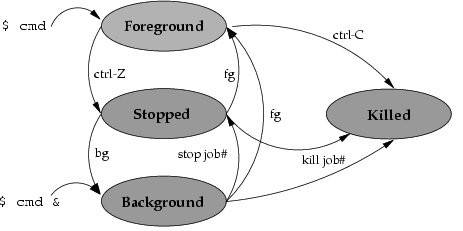

Processes
Basics
- A process is an instance of a program/command.
- Each process has a unique PID (5 digits number).
- Every process has a parent (the one who create the process).
- When you close/kill the parent pocess you kill all the child processes
- How to start a process:
- Manually (run command in terminal)
- At boot time (services or daemons)
- Scheduled ( crontab )
- From anothter process (child process)
====== PROCESSES
COMMAND & # EJecuta el proceso n 2o plano
diswon # independiza el proceso
pwdx 1732127 # En que ruta se inicio el proceso con PID=1732127
lsof
Lists open files (belonging to active processes).
lsof -i:80Que procesos eta ocupando el puerto 80lsof -iTCP -sTCP:LISTENto list all processes that are listening on a TCP port for network requests.
https://copyconstruct.medium.com/lsof-f2b224eee7b5
socat
socat TCP-LISTEN:9000,fork,reuseaddr,bind=localhost TCP:$HOSTNAME:9000: If the connection is refused by the server, will use socat to forward traffic from localhost:9000 to $HOSTNAME:9000 and back.
https://copyconstruct.medium.com/socat-29453e9fc8a6
ss
Sockets
Your system is alive!
inotify: monitoring filesystem eventsinotifywait: wait for changes to files using inotifyiostat: Report Central Processing Unit (CPU) statistics and input/output statistics for devices, partitions and network filesystems (NFS).
Processes VS Jobs
A job is a concept used by the shell. Foreground process, backegraund process and suspended processces in the current shell is a job.
You can have a large number of background jobs running at the same time, but you can only have one foreground job
| processes | jobs | |
|---|---|---|
| definition | instances of a program/command | processes of the current shell |
| tracked by | the Operating System | the current shell |
| identifier | pid (example: 1) |
jobspec (example: %1) |
| see all | ps |
jobs |
| commands | kill, wait, disown, suspend |
fg, bg, jobs |

| Action | Command | Shortcut |
|---|---|---|
| Start a foreground process | command |
|
| Start a background process (shell depen.) | command & |
|
| Start a background process (independent) | nohup command & |
|
| See all the jobs (running & stopped) | jobs |
|
| Stop/pause current process (SIGSTOP) | stop {PID} |
Ctrl Z |
| Resume last stopped job in background | bg |
|
| Resume last stopped job in foreground | fg |
|
| Resume job number 2 in foreground | fg %2 |
|
| Waits for all background jobs to finish | wait |
|
| Waits for job number 1 to finish | wait %1 |
|
| Independice all background jobs | disown -a |
|
| Kill/finish job (SIGINT) | kill {PID} |
Ctrl C |
| Kill/finish job (SIGQUIT) | Ctrl \ |
|
| Clean terminal | Ctrl L |
digraph {
/////////////////////// NODES
rankdir=LR; // Left to Right node direction
ranksep=.5;
{ rank = same; "fg"; "st"; "bg";};
nodesep=.5;
start [shape=point]
fg [ label="Running in\nforegroung" ]
bg [ label="Running in\nbackgroung" ]
bg2 [ label="Running in\nbackgroung" ]
st [ label="Stopped\n(paused)" ]
end [shape=point]
/////////////////////// EDGES
subgraph cluster1 {
label = "Processes with Parent PID = current shell\n(when shell dies, Processes dies too)\n($ jobs to see all these processes)";
fg -> st [ label="Ctrl Z" ];
st -> fg [ label="fg" ];
st -> bg [ label="bg" ];
bg -> st [ label="stop job#" ];
}
start -> fg [ label="command" ];
start -> bg [ label="command &" ];
start -> bg2 [ label="nohup command &" ];
fg -> end [ label="Ctrl C" ];
st -> end [ label="kill job#" ];
bg -> end [ label="kill job#" ];
bg -> bg2 [ label="disown job#"];
}
- https://copyconstruct.medium.com/bash-job-control-4a36da3e4aa7
- https://www.baeldung.com/linux/foreground-background-process
- https://www.baeldung.com/linux/jobs-job-control-bash
- https://fsl.fmrib.ox.ac.uk/fslcourse/unix_intro/job.html
Coprocess https://copyconstruct.medium.com/bash-coprocess-2092a93ad912
Process states
Processes can have several states:
- Running (R)
- Uninterruptible Sleep (D)
- Interruptable Sleep (S)
- Stopped (T)
- Zombie (Z)
Processes and Threads
Process priorities
https://www.tecmint.com/set-linux-process-priority-using-nice-and-renice-commands/
Tracking ongoing processes (ps)
ps(Process status) can be used to see/list all the running processes.ps -f(full) For more information variablesps 19For single-process information, ps along with process id is used
UID: User ID that this process belongs to (the person running it) PID: Process ID PPID: Parent process ID (the ID of the process that started it) C: CPU utilization of process STIME: Process start time TTY: Terminal type associated with the process TIME: CPU time is taken by the process CMD: The command that started this process
UID PID PPID C STIME TTY TIME CMD 0 1 0 0 5may22 ?? 98:12.93 /sbin/launchd 0 69 1 0 5may22 ?? 4:07.06 /usr/sbin/syslogd
Process managers
- launchd (OS X)
- Upstart (Ubuntu) (antiguo y tradicional sistema init)
- SystemV (SysV) (antiguo y tradicional sistema init)
- SystemD (el mas usado (y odiado) en la acutailidad
- Systemd-shim (alternativa moderna)
- In BSD, the init binary doesn't do much regarding startup, basically just executes /etc/rc; it's shell scripts all the way afterwards.
| SystemV | SystemD | |
|---|---|---|
| Distros | Gentoo, Slackware, Linux from Scratch | ArchLinux, AWS, Red Hat, CentOS, Fedora, Debian, Ubuntu |
| Restart | /etc/init.d/sshd start |
systemctl restart sshd |
| Enable | systemctl enable NetworkManager.service |
|
systemctl enable wpa_supplicant |
https://papers.freebsd.org/2018/bsdcan/rice-the_tragedy_of_systemd/
FreeBSD ventajas: init system, LLVM, documentation, ZFS, dtrace
Boot time (System V)
- BIOS (Basic Input/Output System)
- MBR (Master Boot Record)
- GRUB (Grand Unified Bootloader)
- Kernel
- Mounts the root file system as specified in the “root=” in grub.conf
- Kernel executes the
/sbin/initprogram
- Init (PID=1)
- Es el primer proceso que se inicia durante el arranque del sistema por parte del kernel.
- Se ejecutará en segundo plano continuamente hasta que el sistema se apague.
- Lee el archivo
/etc/inittabpara decidir el nivel de ejecución de Linux. - luego inicia todos los demás procesos.
- Run level 0 –> halt (CAUTION: never set initdefault to this)
- Run level 1 –> Single user mode
- Run level 2 –> Multiuser, without NFS (The same as 3, if you do not have networking)
- Run level 3 –> Full multiuser mode (common initdefault)
- Run level 4 –> unused
- Run level 5 –> X11 (common initdefault)
- Run level 6 –> reboot (CAUTION: never set initdefault to this)
- Ejemplo de inittab:
id:3:initdefault:
- Runlevel programs
Depending on your default init level setting, the system will execute the programs from one of the following directories.
- Run level 0 –>
/etc/rc.d/rc0.d/ - Run level 1 –>
/etc/rc.d/rc1.d/ - Run level 2 –>
/etc/rc.d/rc2.d/ - Run level 3 –>
/etc/rc.d/rc3.d/ - Run level 4 –>
/etc/rc.d/rc4.d/ - Run level 5 –>
/etc/rc.d/rc5.d/ - Run level 6 –>
/etc/rc.d/rc6.d/
- Run level 0 –>
- Programs starts with S are used during startup. S for startup.
- Programs starts with K are used during shutdown. K for kill.
Ejemplo de un script que:
# ┌───────────── rc3: Será ejecutado en el Run level 3
# │ ┌───────── S: Será ejecutado al encenderse
# │ │ ┌─────── 98: Momento de ejecución, a menor número, antes se ejecuta
# │ │ │
/etc/rc3.d/S98miscript
# Puede ser un enlace simbolico a un script que esté en otro sitio
ln -s /etc/init.d/mi_script /etc/rc3.d/S98miscript

Reference: https://www.thegeekstuff.com/2011/02/linux-boot-process/
Boot time (SystemD)
SystemD uses "targets" instead of runlevels.
By default, there are two main targets: - multi-user.target: analogous to runlevel 3 - graphical.target: analogous to runlevel 5
# To view current default target, run:
systemctl get-default
# To set a default target, run:
#systemctl set-default TARGET.target
# Establezca el nivel de ejecución actual en 3 (comenzar en modo de línea de comando)
systemctl set-default multi-user.target
# Establezca el nivel de ejecución actual en 5 (encendido para la interfaz gráfica)
systemctl set-default graphical.target
Proc dir
It has PID 28, so we check the /proc
Inter Process Comunication (IPC)
- Shared files
- Shared memory (with semaphores)
- Pipes
- unnamed pipes
| - named pipes
mkfifo my_pipe - Message queues
- Sockets
- Unix domain sockets
- TCP/IP sockets
- Signals
-
semaphores
-
https://www.digitalocean.com/community/tutorials/how-to-use-top-netstat-du-other-tools-to-monitor-server-resources
- https://www.digitalocean.com/community/tutorials/how-to-use-ps-kill-and-nice-to-manage-processes-in-linux
- https://www.digitalocean.com/community/tutorials/understanding-systemd-units-and-unit-files
- https://opensource.com/article/20/1/inter-process-communication-linux
- https://opensource.com/downloads/guide-inter-process-communication-linux